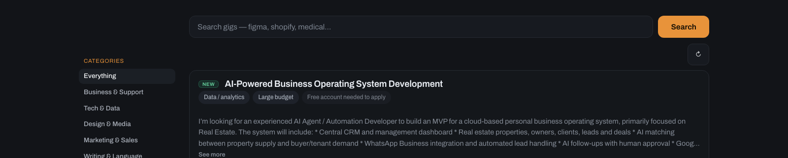

Freelance projects and full-time remote work are scattered across a dozen boards, and the replies that land early are the ones that get read. Nabbly watches all of them and puts every new one in a single place, minutes after it posts.
One-off projects and full-time remote work, side by side, minutes after they post.

Freelance projectsRemote rolesContract work
Good work is scattered across boards, subreddits and communities. Being early is the part you can control, and we handle the rest.
Every board and hiring community, continuously. You never keep a single tab open.
Each gig is tagged by skill, budget and urgency, then matched to what you do. You set the rules it sorts by.
When something fits, you get a ping on whichever channel you like, before the crowd shows up.
We draft the first reply for you, so you answer fast instead of staring at a blank box. Pro writes it from the actual post. Free gives you a template worth sending.
Noise in your inbox. Signal on your board. Forward it once, and every gig buried inside gets pulled out, sorted, and added automatically.
Free isn't a trial, it's the whole board. Pro is free for 14 days whenever you're ready, no card.